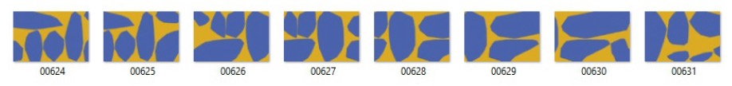
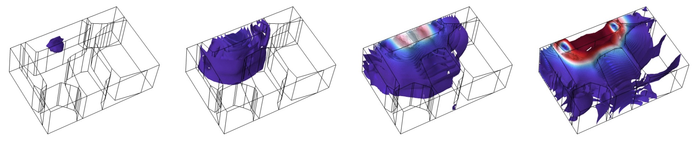
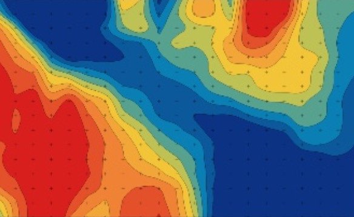
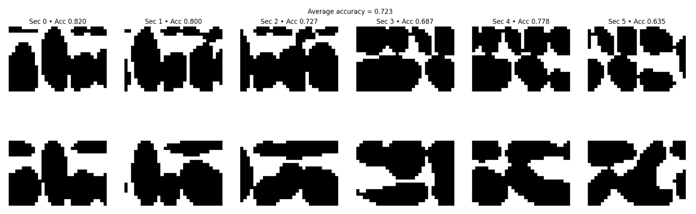
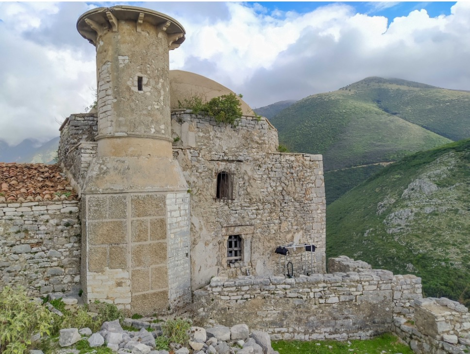

Research internship · Summer 2025 · ITEFI-CSIC, Madrid
I explored the use of deep learning to reconstruct the internal structure of historic stone walls from sonic tomography data. Sonic tomography lets us "see" inside by sending sound waves through a wall and recording what comes out the other side. While traditional methods produce hard-to-interpret velocity maps, my approach instead produces sharp, binary images that classify every pixel as stone or mortar.
A procedural algorithm that creates thousands of realistic masonry cross-sections, inspired by real specimens built by a traditional stonemason. The generator partitions a rectangle into random row/column areas, places a random polygon (stone) inside each cell, and snaps corner and edge stones to the boundaries — mimicking real construction patterns. Each 6 cm × 4 cm section is exported three ways: a 30×20 px binary image (ground truth label), STL meshes per stone (for COMSOL import), and a DXF vector outline. Over 12,800 unique sections were generated this way.

For each cross-section, ultrasonic wave propagation is simulated via finite element analysis in COMSOL Multiphysics. A 54 kHz Gaussian pulse is fired from each of 6 emitters; 11 receivers on the opposite face record the response, producing 66 waveforms per section over 200 µs. The 3D mesh uses 10,000+ tetrahedral elements, with material properties (Young's modulus, Poisson's ratio, density) calibrated against physical experiments on 3D-printed resin-and-mortar specimens.
I wrote a Java program using the COMSOL API that reads each set of STL files, builds the model, places emitters/receivers, assigns materials and boundary conditions, runs the transient solver, and exports results — all without the GUI. A batch script chains these runs sequentially. This took throughput from a few manual simulations per day to ~200 fully automated.

Traditional tomography extracts a single number per ray (time of flight). To keep much more of the signal, a 1D convolutional autoencoder (Conv1d → BatchNorm → ELU → Dropout encoder, mirrored ConvTranspose1d decoder) compresses each waveform into a 16- or 32-dimensional latent vector, trained with Adam + MSE loss. The latent representation captures wave shape, attenuation, and scattering effects that a single travel-time value would discard.
The wall is represented as a 30×20 pixel grid. For each pixel, the model builds a feature vector combining: the pixel's spatial bounds, the emitter/receiver coordinates and path length of every ray that crosses it, and the 66 latent waveform vectors. An MLP outputs a stone-vs-mortar probability per pixel; assembling all 600 predictions reconstructs the full cross-section. The entire training pipeline — dataset caching, configurable architectures, TensorBoard logging, checkpoint management — is designed so the team can easily swap in new models as the dataset grows.


With the simulated dataset, the model reached ~88% validation accuracy. The network correctly identifies key structural features — transversal stones, separated wall leaves, stone positions.
This is a step toward non-invasive evaluation of heritage structures helping conservators understand what's happening inside walls they cannot open. The approach was tested in the context of the MeDeAH project, which conducted field campaigns at the Alhambra and Borsh Castle in Albania.

Python · PyTorch · COMSOL Multiphysics · Java · NumPy · TensorBoard · Finite Element Method · Signal Processing · 3D Printing · Automation & Batch Processing